The slide of the lecture is on the left, the same figure or table on the right, computed in the browser from the same data. The ▶ button moves the parameter step by step; the “Worked example” boxes redo the calculation with the numbers of the chapter.
Cycles and frequencies · The spectral density · The periodogram · Estimating the spectrum · Cycles in economic and energy data · Long memory: the pole at zero · Linear filters · Two series: coherence and phase · A pointer: wavelets
Cycles and frequencies
A cycle: amplitude, frequency, phase
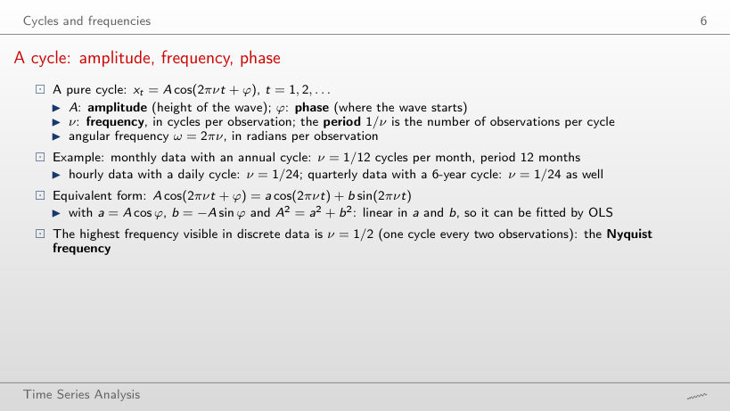
Worked example
Answer
a = 2 cos 1.5 = 0.14 and b = −2 sin 1.5 = −1.99: with a phase close to π/2 the cycle is almost a pure sine with a negative sign. Whatever the phase, a² + b² = 4 = A².
Two cycles plus noise
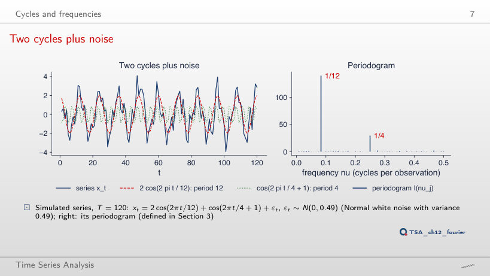
Answer
119.2, four times higher than with amplitude 1 (29.6) and close to the theory A²T/4 = 4·120/4 = 120: the spike grows with the square of the amplitude. The spike at 1/12 stays at 139.7, above its theoretical 120, because the noise also contributes at that frequency; without noise the two spikes are exactly 120 and 30.
Worked example: the DFT of four numbers
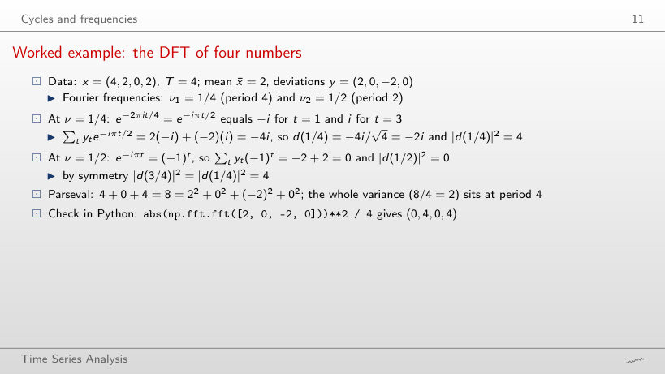
Worked example
Answer
All at ν = 1/2: the deviations (1, −1, 1, −1) alternate, so |d(1/2)|² = (−4)²/4 = 4 and |d(1/4)|² = |d(3/4)|² = 0; Parseval: 4 = 1 + 1 + 1 + 1. The series has period 2.
Aliasing
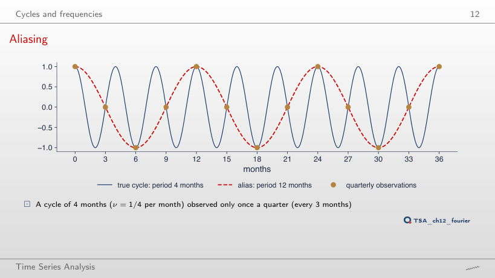
Answer
A constant: the cycle has 4/4 = 1 cycle per observation, which folds to |1 − 1| = 0, so every observation falls at the same point of the cycle and the 4-month cycle disappears from the data (an alias of infinite period). At Δ = 5 months the same cycle appears as a 20-month cycle.
Interpreting aliasing
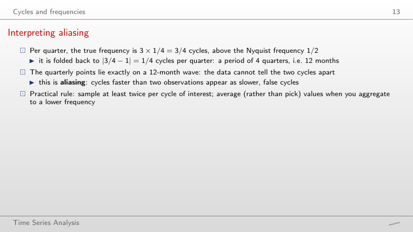
Worked example
Answer
15 months: 3/2.5 = 1.2 cycles per quarter, which folds to |1.2 − 1| = 0.2, i.e. 5 quarters. A cycle faster than the observations appears as a slower, false cycle.
The spectral density
Worked example: AR(1) and MA(1) spectra
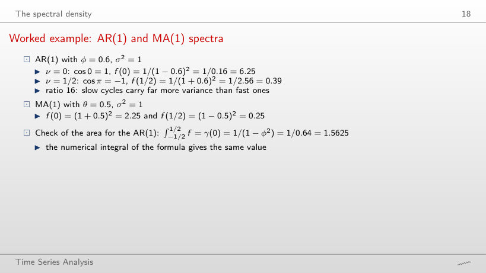
Worked example
Answer
f(0) = 1/1.6² = 0.39 and f(1/2) = 1/0.4² = 6.25: the mirror image of φ = 0.6. A negative φ makes the series alternate, so the power moves to the highest frequencies; the variance stays 1.5625.
Worked example: the peak of an AR(2) spectrum
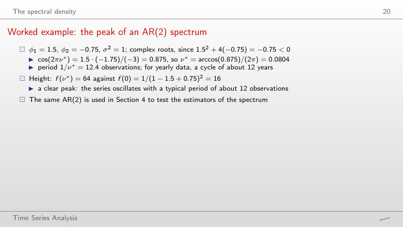
Worked example
Answer
To a shorter one: 9.1 observations at φ₂ = −0.95 (12.4 at −0.75 and 20.2 at −0.65), and the peak becomes much higher (981 against 64). A more negative φ₂ brings the complex roots closer to the unit circle (their modulus is √−φ₂) and speeds up the oscillation of the ACF.
A gallery of spectral densities
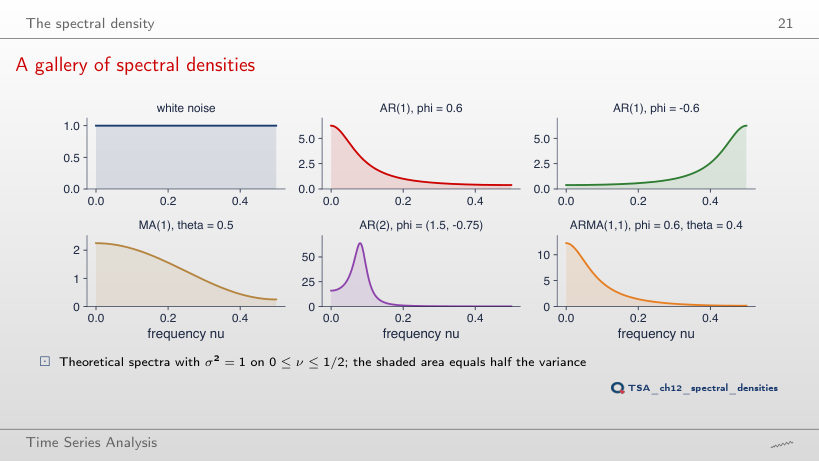
Answer
58%, against 20% for white noise, which spreads its variance evenly: the band [0, 0.1] is a fifth of [0, 0.5]. For the AR(2) the share is 81%, for the AR(1) with φ = −0.6 only 5%.
The periodogram
Sunspots and their periodogram
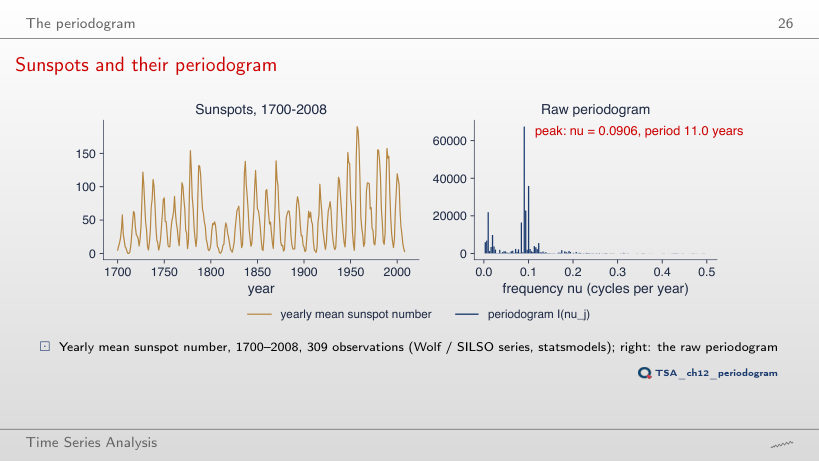
Answer
At 10.9 years (j = 10), close to the 11.0 years of the full sample: the cycle shows in a century of data, but the Fourier grid is coarser (periods 109/j: 12.1, 10.9, 9.9 years). Fisher’s test gives g = 0.222 and a p-value of 0.00009.
Interpreting the sunspot periodogram
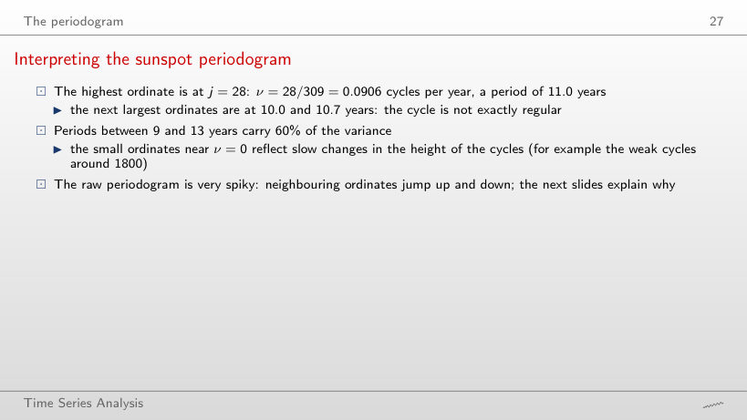
Answer
63%, against 60% for 9–13 years: the periods between 13 and 20 years add only 3 percentage points. Almost all the power of the solar cycle lies between 9 and 13 years; with the band 5–20 years the share reaches 73%, because the harmonic of about 5.5 years comes in as well.
Statistical properties of the periodogram
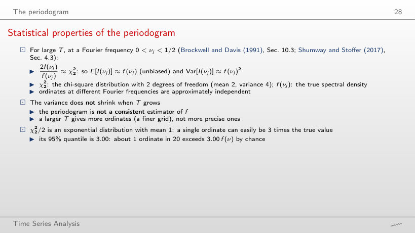
Answer
37.6% for T = 2048, close to e−1 = 36.8%, not 50%: the exponential distribution has mean 1 but median ln 2 = 0.69, so most ordinates lie below f and a few large values pull the mean up. For c = 3 the share is 5.1% (theory 5.0%).
The periodogram of white noise
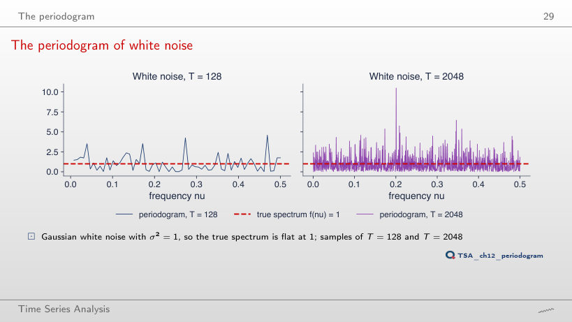
Answer
0.21, close to 1/√21 = 0.22: averaging L nearly independent ordinates divides the standard deviation by √L; for T = 128 it is 0.20. A longer sample alone did not achieve this: the raw periodograms have standard deviations 1.03 and 1.00.
Estimating the spectrum
Leakage: raw and tapered periodograms
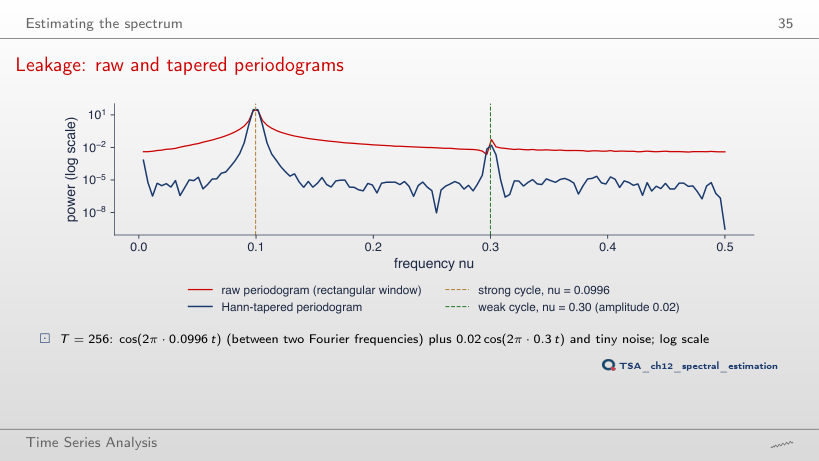
Answer
755 times, against 7.7 at j = 25.5: a cycle that fits a whole number of times in the sample does not leak, and the background falls to the level of the tiny noise. With the Hann taper the ratio is 4,176, almost the same for any j.
Smoothing the periodogram (1/2): the Daniell estimator
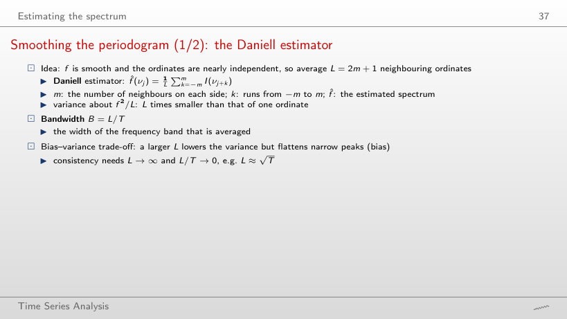
Worked example
Answer
At 11.0 years (j = 28), the highest raw ordinate; with m = 2 the smoothed peak moves to 10.3 years (j = 30), because the mean of the five ordinates around j = 30 is the largest. With m = 4 the peak returns to 11.0 years: the position of the smoothed peak varies by one or two Fourier frequencies.
Smoothed estimates of an AR(2) spectrum
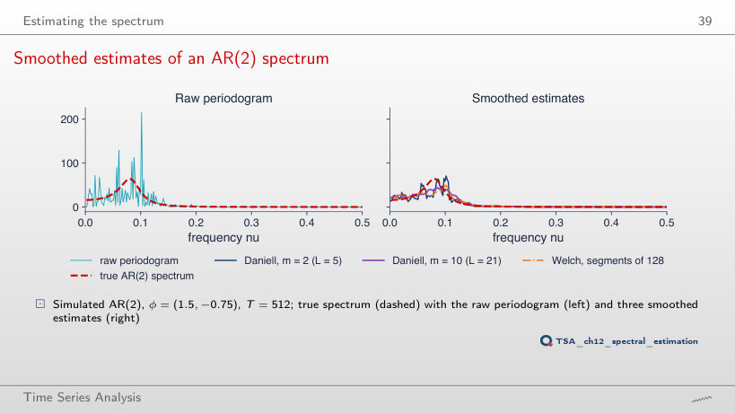
Answer
At ν = 0.0625 (period 16.0), height 36.1, against the true peak at ν = 0.080 with height 64: the window is 41/512 = 0.08 wide, as wide as the peak frequency, so it flattens and shifts the peak. The mean squared error of log f̂ rises again, to 0.11 (0.09 at m = 10 and at m = 15).
Interpreting the smoothed estimates
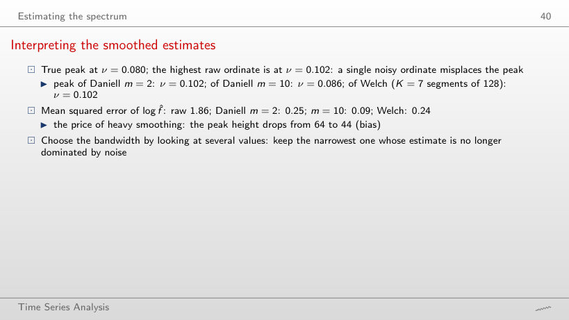
Answer
At m = 12 (0.089), very close to m = 10 (0.092); at m = 30 the error climbs to 0.22. Up to m = 12 the variance falls, then the bias dominates: the height of the peak drops from 64 to 44.7 at m = 12 and to 31.5 at m = 30.
Worked example: a 95% band with L = 5
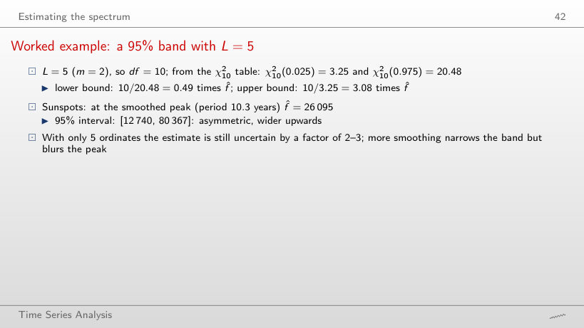
Worked example
Answer
1.62 (and the lower one 0.68), against 3.08 and 0.49 for L = 5: the band narrows roughly like 1/√L. It stays asymmetric, wider upwards, because the chi-square distribution has its tail to the right.
Sunspots: smoothed spectrum with a confidence band
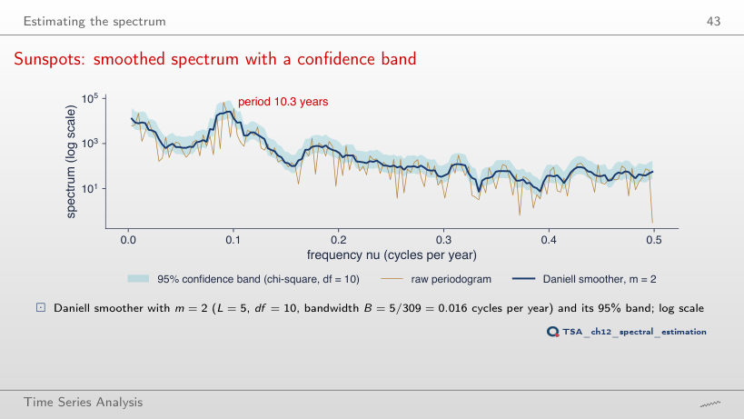
Answer
39.5 times (2/χ²₂(0.025) = 2/0.0506), and the lower bound is 0.27 × f̂: a single ordinate says very little about the height of the spectrum. With m = 2 the multipliers are 0.49 and 3.08, with m = 8 they are 0.65 and 1.72.
Cycles in economic and energy data
GDP growth and HP cycles
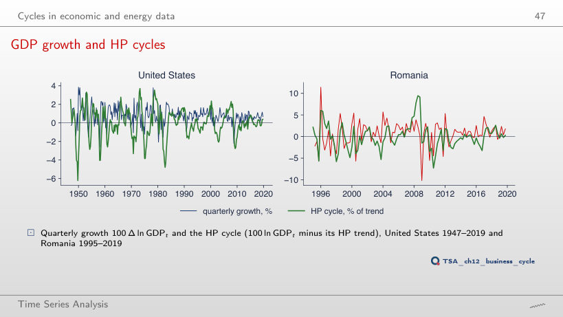
Answer
It falls, to 1.03: a smaller λ lets the trend follow the data more closely, so the cycle keeps only the faster fluctuations; with λ = 25,600 it rises to 2.23. The growth rates do not depend on λ (standard deviation 0.93).
Spectra of GDP growth and HP cycles
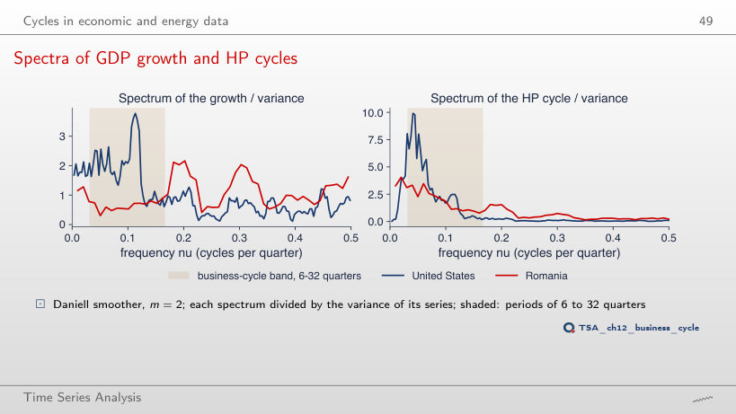
Answer
At 26.5 quarters (6.6 years), against 24.3 with m = 2: a raw ordinate is noisy, and the smoothed peak can move by one Fourier frequency (T = 292: 292/11 = 26.5, 292/12 = 24.3). The peak of US growth stays at 8.8 quarters.
Interpreting the GDP spectra
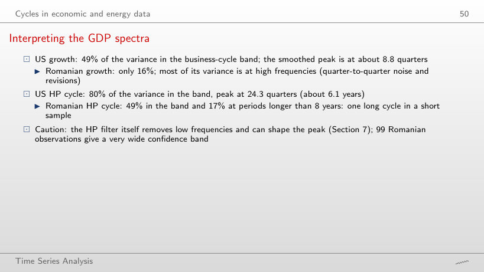
Answer
90%, against 80% for 6–32 quarters: the US HP cycle still has much power between 8 and 12 years. For Romanian growth the share hardly changes (15.6% in both cases), because its variance sits at high frequencies.
The rhythm of electricity demand
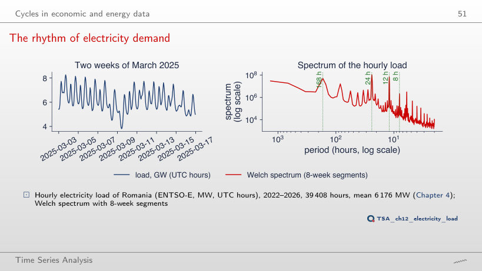
Answer
At 12 hours, ahead of 24 hours (as in 2025); over 2022–2026 the 24-hour ordinate is the highest. The daily profile with two peaks, in the morning and in the evening, puts much power into the 12-hour harmonic, and the order of the two can change from one year to the next.
Interpreting the load spectrum
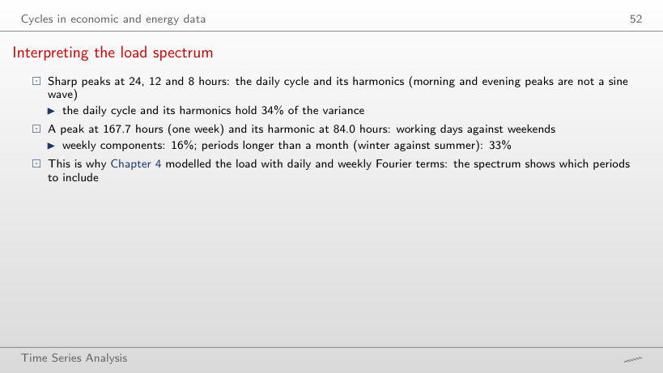
Answer
Very little: from 33.7% to 33.4%. The daily cycle is almost perfectly periodic, so its power sits in a few very narrow ordinates at 24/k hours; the weekly cycle falls more, from 15.7% to 14.9%: its power is spread over more neighbouring ordinates.
Long memory: the pole at zero
The pole at zero in stock-market data
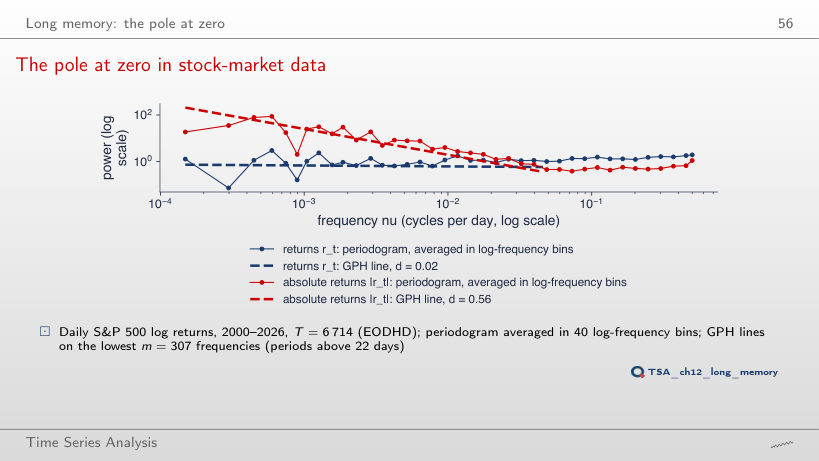
Answer
0.38, against 0.56 with m = 307, with standard error 0.089; with exponent 0.80 (m = 1,152) it is 0.41. The estimate depends on the bandwidth: few frequencies give a large standard error, many frequencies bring in short-memory effects. For the returns d̂ stays between −0.04 and 0.14.
Linear filters
Linear filters and their gain (2/2)
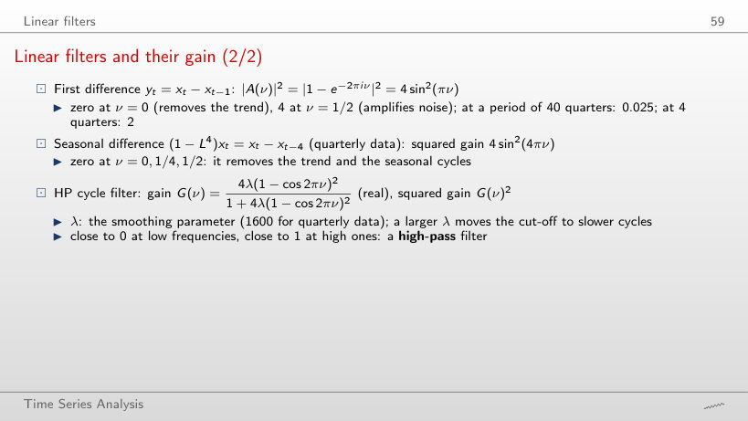
Worked example
Answer
At 45.0 quarters (11.3 years), against 31.8 quarters for λ = 1600: a 4 times larger λ moves the cut-off to slower cycles, by a factor of about 41/4 = 1.41. At 32 quarters G² rises from 0.49 to 0.82.
Squared gains of common filters
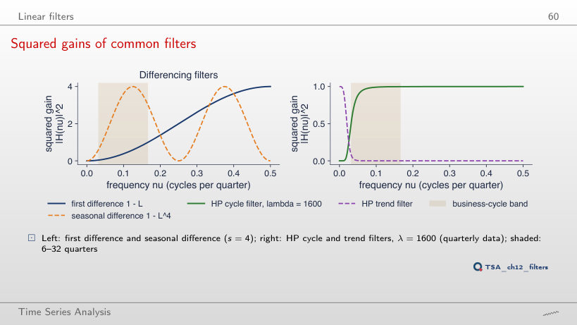
Answer
0: 4 sin²(4π/4) = 4 sin²(π) = 0. The seasonal difference removes the yearly cycle of quarterly data (and its 2-quarter harmonic), while the first difference amplifies it by 2. At 8 quarters the seasonal difference has its largest gain, 4.
Interpreting the filter gains
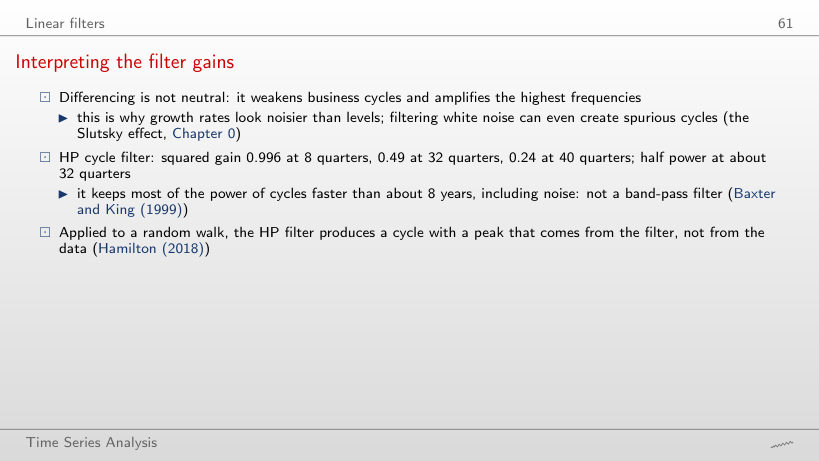
Answer
0.017, against 0.49 for λ = 1600: with λ = 100 the trend follows almost every 8-year cycle and the HP cycle keeps only the short periods (half power at 15.8 quarters). At 8 quarters the squared gain is still 0.94.
Two series: coherence and phase
Industrial production and unemployment
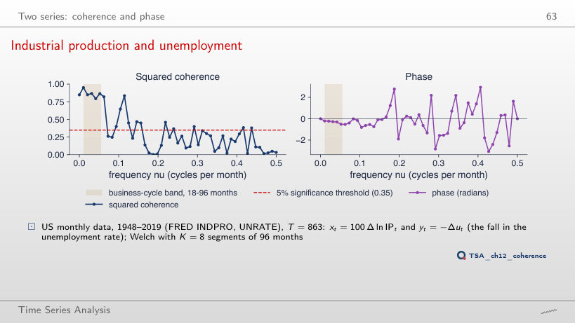
Answer
It falls from 0.35 to 0.17 (1 − 0.051/16): more segments make the smoothed coherence more precise, so a smaller value is already significant. The mean coherence in the 18–96-month band rises to 0.90, and the phase at the 48-month cycle gives a lag of 2.1 months. With 144-month segments (K = 5) the threshold is 0.53.
A pointer: wavelets
Wavelet power of the sunspots
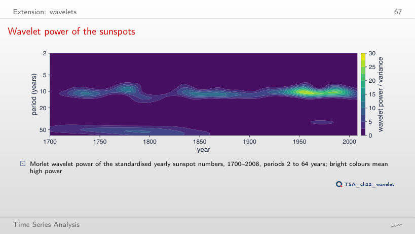
Answer
It rises from 2.0 to 2.5, while the mean over the whole sample goes from 5.7 to 5.9: a longer wavelet averages over more years, so the weak minimum around 1800 is blurred with its neighbours. The year of the maximum stays around 1956.
Simulations of the chapter (seed 2026): the Normal draws of the two-cycles example (T = 120), of the white-noise periodograms (T = 128 and T = 2048), of the leakage example (T = 256) and the simulated AR(2) of the smoothing example (T = 512). The yearly sunspots 1700–2008 (statsmodels), the hourly electricity load of Romania 1 January 2022 – 30 June 2026 (the ENTSO-E extract of Chapter 4, put on a regular hourly grid by the chapter’s loader) and the daily S&P 500 returns 2000–2026 (EODHD) are not revised and reproduce the numbers of the lecture exactly. US real GDP (FRED GDPC1) and US industrial production and unemployment (FRED INDPRO, UNRATE), read on 4 November 2026 and cut at 2019 as in the lecture, reproduce the numbers of the lecture exactly. Romanian real GDP (Eurostat namq_10_gdp) has been revised since the slides were made: the page uses the vintage of the slides, read from the vector chart charts/tsa_ch12_gdp_series.pdf, in which every one of the 99 quarterly growth rates (1995 Q2 – 2019 Q4) is a vertex of the line; they reproduce the numbers of the lecture to the sixth significant digit; the values with the Eurostat data of 4 November 2026 are given next to them. Variants that do not appear in the lecture (other amplitudes, samples, bandwidths, values of λ, segments, ω₀) are extra runs of the chapter’s code on the same data; the charts of “Interpreting aliasing”, “Interpreting the sunspot periodogram”, “Statistical properties of the periodogram”, “Interpreting the smoothed estimates”, “Interpreting the GDP spectra”, “Interpreting the load spectrum” and “Interpreting the filter gains” are extra charts for slides that give only numbers.